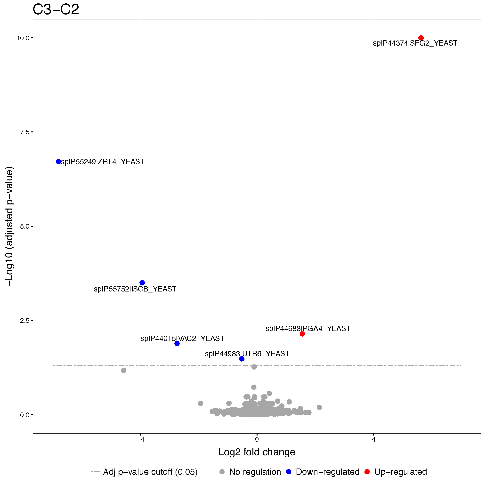
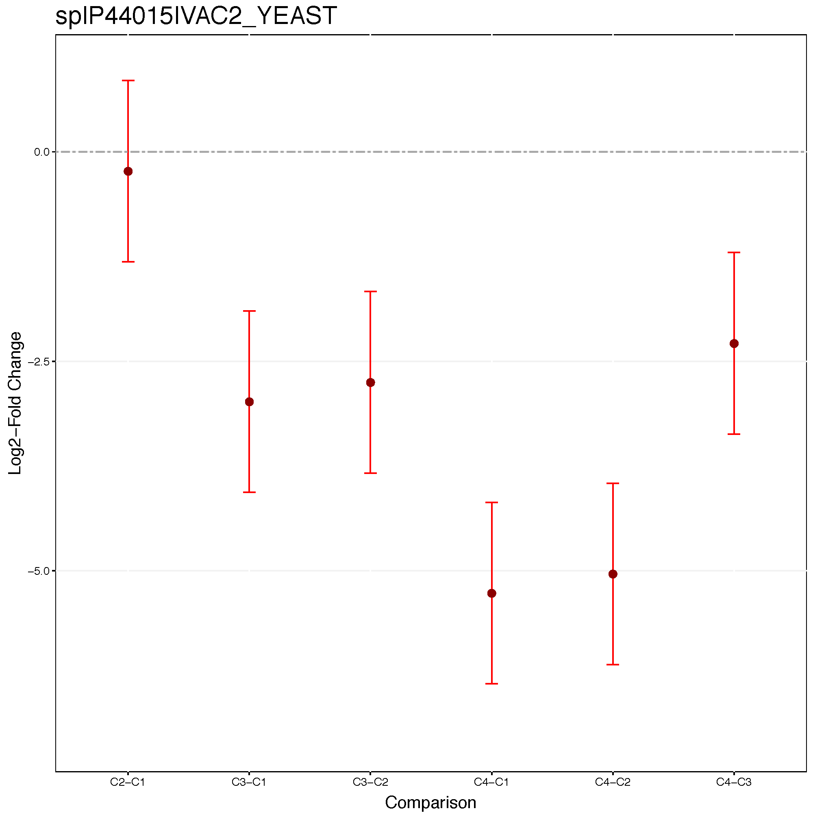
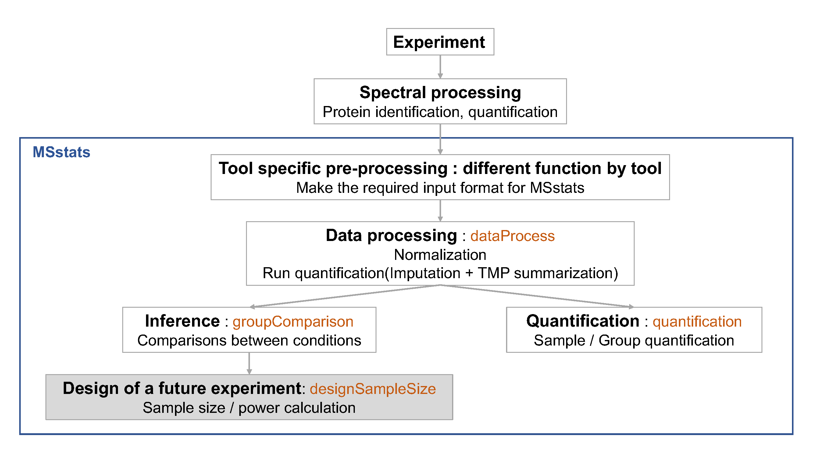
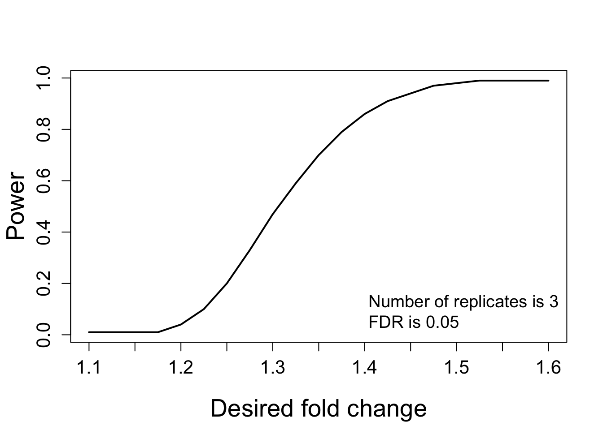

Chapter 3 Day 1 - Section 3 : MSstats, Differential abundance and sample size calculation
3.1 Summary
- Significance analysis for MS proteomics based peak intenesities data
3.2 Data
- The processed data,
quant.skyline.rda,quant.maxquant.rda,quant.openms.rda,quant.progenesis.rda, which is output ofdataProcessfrom section 2.
3.3 Load MSstats
Load MSstats first. Then you are ready to start MSstats.
library(MSstats)
?MSstats## Registered S3 methods overwritten by 'ggplot2':
## method from
## [.quosures rlang
## c.quosures rlang
## print.quosures rlang3.4 Inference and future design of experiment with Skyline output
3.4.1 Load the processed data (output of dataProcess) of Skyline output
load(file='data/data_Skyline/quant.skyline.rda')3.4.2 Finding differentially abundant proteins across conditions

3.4.2.1 Assign contrast matrix
After we normalized the data and summarized each protein’s behaviour across conditions in dataProcess step, we are all set to compare protein changes between groups of conditions. Within MSstats we can do this with the groupComparison function, which takes as input the output of the dataProcess function.
?groupComparisonWe have to tell groupComparison which are the conditions we would like to compare.
You can make your contrast.matrix in R in a text editor. We define our contrast matrix by adding a column for every condition, in alphabetical order. We add a row for every comparison we would like to make between groups of conditions.
0 is for conditions we would like to ignore. 1 is for conditions we would like to put in the numerator of the ratio or fold-change. -1 is for conditions we would like to put in the denumerator of the ratio or fold-change.
If you have multiple groups, you can assign any gruop comparisons you are interested in. For example, if you have 4 different conditions, Condition1, Condition2, Condition3, Condition4, there are many possible comparisons.
# check unique conditions and check order of condition information
# In this case, Disease and Healthy
unique(quant.skyline$ProcessedData$GROUP_ORIGINAL)## [1] Condition1 Condition2 Condition3 Condition4
## Levels: Condition1 Condition2 Condition3 Condition4comparison1<-matrix(c(-1,1,0,0),nrow=1)
comparison2<-matrix(c(-1,0,1,0),nrow=1)
comparison<-rbind(comparison1, comparison2)
row.names(comparison)<-c("C2-C1","C3-C1")
comparison## [,1] [,2] [,3] [,4]
## C2-C1 -1 1 0 0
## C3-C1 -1 0 1 0Challenges
Make the matrix, named
comparison, for all 6 paired comparision among 4 conditions (condition1, condition2, condition3, condition4)
unique(quant.skyline$ProcessedData$GROUP_ORIGINAL)## [1] Condition1 Condition2 Condition3 Condition4
## Levels: Condition1 Condition2 Condition3 Condition4comparison1<-matrix(c(-1,1,0,0),nrow=1)
comparison2<-matrix(c(-1,0,1,0),nrow=1)
comparison3<-matrix(c(-1,0,0,1),nrow=1)
comparison4<-matrix(c(0,-1,1,0),nrow=1)
comparison5<-matrix(c(0,-1,0,1),nrow=1)
comparison6<-matrix(c(0,0,-1,1),nrow=1)
comparison<-rbind(comparison1, comparison2, comparison3, comparison4, comparison5, comparison6)
row.names(comparison)<-c("C2-C1","C3-C1","C4-C1","C3-C2","C4-C2","C4-C3")
comparison## [,1] [,2] [,3] [,4]
## C2-C1 -1 1 0 0
## C3-C1 -1 0 1 0
## C4-C1 -1 0 0 1
## C3-C2 0 -1 1 0
## C4-C2 0 -1 0 1
## C4-C3 0 0 -1 13.4.2.2 Comparing conditions with groupComparison
groupComparison uses the run-level summarized data ($RunlevelData from dataProcess function) for hypothesis testing.
test.skyline <- groupComparison(contrast.matrix=comparison, data=quant.skyline)Let’s check the output.
class(test.skyline)## [1] "list"names(test.skyline)## [1] "ComparisonResult" "ModelQC" "fittedmodel"# Show test result
# Label : which comparison is used
# log2FC : estimated log2 fold change between Diseased and Healthy
# adj.pvalue : adjusted p value
# issue : detect whether this protein has any issue for comparison
# such as, there is measurement in certain group, or no measurement at all.
# MissingPercentage : the number of missing intensities/total number of intensities
# in conditions your are interested in for comparison
# ImputationPercentage : the number of imputed intensities/total number of intensities
# in conditions your are interested in for comparison
head(test.skyline$ComparisonResult)## Protein Label log2FC SE Tvalue DF
## 1 sp|D6VTK4|STE2_YEAST C2-C1 0.06094263 0.10304517 0.5914167 8
## 2 sp|O13297|CET1_YEAST C2-C1 -0.11024579 0.07589698 -1.4525714 8
## 3 sp|O13329|FOB1_YEAST C2-C1 -0.16114268 0.29273717 -0.5504688 8
## 4 sp|O13539|THP2_YEAST C2-C1 -0.43646953 0.83013182 -0.5257834 8
## 5 sp|O13547|CCW14_YEAST C2-C1 -0.05679619 0.14506388 -0.3915254 8
## 6 sp|O13563|RPN13_YEAST C2-C1 -0.16850033 0.09496183 -1.7744006 8
## pvalue adj.pvalue issue MissingPercentage ImputationPercentage
## 1 0.5705706 0.9983122 NA 0 0
## 2 0.1844096 0.9983122 NA 0 0
## 3 0.5970289 0.9983122 NA 0 0
## 4 0.6132973 0.9983122 NA 0 0
## 5 0.7056311 0.9983122 NA 0 0
## 6 0.1139193 0.9983122 NA 0 0# After fitting linear model, residuals and fitted values can be shown.
head(test.skyline$ModelQC)## RUN PROTEIN ABUNDANCE NumMeasuredFeature MissingPercentage
## 1: 1 sp|D6VTK4|STE2_YEAST 26.95958 7 0
## 2: 2 sp|D6VTK4|STE2_YEAST 26.78088 7 0
## 3: 3 sp|D6VTK4|STE2_YEAST 26.68074 7 0
## 4: 4 sp|D6VTK4|STE2_YEAST 26.98540 7 0
## 5: 5 sp|D6VTK4|STE2_YEAST 26.90384 7 0
## 6: 6 sp|D6VTK4|STE2_YEAST 26.71479 7 0
## more50missing NumImputedFeature originalRUN GROUP
## 1: FALSE 0 JD_06232014_sample1_B.raw 1
## 2: FALSE 0 JD_06232014_sample1_C.raw 1
## 3: FALSE 0 JD_06232014_sample1-A.raw 1
## 4: FALSE 0 JD_06232014_sample2_A.raw 2
## 5: FALSE 0 JD_06232014_sample2_B.raw 2
## 6: FALSE 0 JD_06232014_sample2_C.raw 2
## GROUP_ORIGINAL SUBJECT_ORIGINAL SUBJECT_NESTED SUBJECT residuals
## 1: Condition1 1 1.1 1 0.15251179
## 2: Condition1 1 1.1 1 -0.02618545
## 3: Condition1 1 1.1 1 -0.12632634
## 4: Condition2 2 2.4 4 0.11739159
## 5: Condition2 2 2.4 4 0.03582686
## 6: Condition2 2 2.4 4 -0.15321844
## fitted
## 1: 26.80707
## 2: 26.80707
## 3: 26.80707
## 4: 26.86801
## 5: 26.86801
## 6: 26.86801# Fitted model per protein
head(test.skyline$fittedmodel)## [[1]]
##
## Call:
## lm(formula = ABUNDANCE ~ GROUP, data = data2)
##
## Coefficients:
## (Intercept) GROUP2 GROUP3 GROUP4
## 26.80707 0.06094 -0.16303 -0.11015
##
##
## [[2]]
##
## Call:
## lm(formula = ABUNDANCE ~ GROUP, data = data2)
##
## Coefficients:
## (Intercept) GROUP2 GROUP3 GROUP4
## 24.69673 -0.11025 -0.13596 -0.08799
##
##
## [[3]]
##
## Call:
## lm(formula = ABUNDANCE ~ GROUP, data = data2)
##
## Coefficients:
## (Intercept) GROUP2 GROUP3 GROUP4
## 23.6136 -0.1611 0.1294 -0.3427
##
##
## [[4]]
##
## Call:
## lm(formula = ABUNDANCE ~ GROUP, data = data2)
##
## Coefficients:
## (Intercept) GROUP2 GROUP3 GROUP4
## 26.3935 -0.4365 -0.4232 -0.4941
##
##
## [[5]]
##
## Call:
## lm(formula = ABUNDANCE ~ GROUP, data = data2)
##
## Coefficients:
## (Intercept) GROUP2 GROUP3 GROUP4
## 27.04062 -0.05680 -0.28259 -0.08648
##
##
## [[6]]
##
## Call:
## lm(formula = ABUNDANCE ~ GROUP, data = data2)
##
## Coefficients:
## (Intercept) GROUP2 GROUP3 GROUP4
## 26.17882 -0.16850 -0.06754 -0.20791test.skyline$fittedmodel[[1]]##
## Call:
## lm(formula = ABUNDANCE ~ GROUP, data = data2)
##
## Coefficients:
## (Intercept) GROUP2 GROUP3 GROUP4
## 26.80707 0.06094 -0.16303 -0.110153.4.2.3 Save the comparison result
Let’s save the testing result as rdata and .csv file.
Skyline.result <- test.skyline$ComparisonResult
save(Skyline.result, file='data/data_Skyline/Skyline.result.rda')
write.csv(Skyline.result, file='data/data_Skyline/testResult_ABRF_skyline.csv')3.4.2.4 subset of significant comparisons
Let’s inspect the results to see what proteins are changing significantly between Diseased and Healthy.
head(Skyline.result)## Protein Label log2FC SE Tvalue DF
## 1 sp|D6VTK4|STE2_YEAST C2-C1 0.06094263 0.10304517 0.5914167 8
## 2 sp|O13297|CET1_YEAST C2-C1 -0.11024579 0.07589698 -1.4525714 8
## 3 sp|O13329|FOB1_YEAST C2-C1 -0.16114268 0.29273717 -0.5504688 8
## 4 sp|O13539|THP2_YEAST C2-C1 -0.43646953 0.83013182 -0.5257834 8
## 5 sp|O13547|CCW14_YEAST C2-C1 -0.05679619 0.14506388 -0.3915254 8
## 6 sp|O13563|RPN13_YEAST C2-C1 -0.16850033 0.09496183 -1.7744006 8
## pvalue adj.pvalue issue MissingPercentage ImputationPercentage
## 1 0.5705706 0.9983122 NA 0 0
## 2 0.1844096 0.9983122 NA 0 0
## 3 0.5970289 0.9983122 NA 0 0
## 4 0.6132973 0.9983122 NA 0 0
## 5 0.7056311 0.9983122 NA 0 0
## 6 0.1139193 0.9983122 NA 0 0# select subset of rows with adj.pvalue < 0.05
SignificantProteins <-
Skyline.result[Skyline.result$adj.pvalue < 0.05, ]
nrow(SignificantProteins)## [1] 28# select subset of rows with adj.pvalue < 0.05 and log2FC > 2
SignificantProteinsUpInDiseased <- SignificantProteins[SignificantProteins$log2FC > 2 ,]
nrow(SignificantProteinsUpInDiseased)## [1] 143.4.3 Visualization of differentially abundant proteins
?groupComparisonPlots3.4.3.1 Volcano plot
Volcano plots allow us to visually separate strong changes, which are not significant, from strong and significant changes. Look for these subjects in the upper right and upper left quadrants of the plot. Protein name will be shown only for siginificant proteins.
groupComparisonPlots(data = Skyline.result,
type = 'VolcanoPlot',
address = 'data/data_Skyline/testResult_ABRF_skyline_')
We can set up estimated fold change cutoff.
groupComparisonPlots(data = Skyline.result,
type = 'VolcanoPlot',
sig = 0.05,
FCcutoff = 2^2,
address = 'data/data_Skyline/testResult_ABRF_skyline_FCcutoff4_')
3.4.3.2 Comparison plot
Comparison plots illustrate model-based estimates of log-fold changes, and the associated uncertainty, in several comparisons of conditions for one protein. X-axis is the comparison of interest. Y-axis is the log fold change. The dots are the model-based estimates of log-fold change, and the error bars are the model-based 95% confidence intervals (the option sig can be used to change the significance level of significance). For simplicity, the confidence intervals are adjusted for multiple comparisons within protein only, using the Bonferroni approach. For proteins with N comparisons, the individual confidence intervals are at the level of 1-sig/N.
groupComparisonPlots(Skyline.result,
type="ComparisonPlot",
address="data/data_Skyline/testResult_ABRF_skyline_")
Let’s check the comparison result for protein sp|P44015|VAC2_YEAST.
Skyline.result[Skyline.result$Protein == 'sp|P44015|VAC2_YEAST', ]## Protein Label log2FC SE Tvalue DF
## 1756 sp|P44015|VAC2_YEAST C2-C1 -0.2287384 0.3108677 -0.7358063 8
## 4774 sp|P44015|VAC2_YEAST C3-C1 -2.9716852 0.3108677 -9.5593254 8
## 7792 sp|P44015|VAC2_YEAST C4-C1 -5.2574901 0.3108677 -16.9123090 8
## 10810 sp|P44015|VAC2_YEAST C3-C2 -2.7429468 0.3108677 -8.8235190 8
## 13828 sp|P44015|VAC2_YEAST C4-C2 -5.0287517 0.3108677 -16.1765027 8
## 16846 sp|P44015|VAC2_YEAST C4-C3 -2.2858049 0.3108677 -7.3529837 8
## pvalue adj.pvalue issue MissingPercentage
## 1756 4.828617e-01 0.9983122047 NA 0
## 4774 1.187124e-05 0.0089568526 NA 0
## 7792 1.515151e-07 0.0001143182 NA 0
## 10810 2.143047e-05 0.0129354325 NA 0
## 13828 2.143125e-07 0.0001293590 NA 0
## 16846 7.970992e-05 0.0601411333 NA 0
## ImputationPercentage
## 1756 0
## 4774 0
## 7792 0
## 10810 0
## 13828 0
## 16846 03.4.4 Planning future experimental designs

This last analysis step views the dataset as a pilot study of a future experiment, utilizes its variance components, and calculates the minimal number of replicates required in a future
experiment to achieve the desired statistical power. The calculation is performed by the function designSampleSize, which takes as input the fitted model in groupComparison. Sample size calculation assumes same experimental design (i.e. group comparison, time course or paired design) as in the current dataset, and uses the model fit to estimate the median variance components across all the proteins. Finally, sample size calculation assumes that a large proportion of proteins (specifically, 99%) will not change in abundance in the future experiment. This assumption also provides conservative results.
Using the estimated variance components, the function relates the number of biological replicates per condition (numSample, rounded to 0 decimal), average statistical power across all the proteins (power), minimal fold change that we would like to detect (can be specified as a range, e.g. desiredFC=c(1.1, 2)), and the False Discovery Rate (FDR). The user should specify all these quantities but one, and the function will solve for the remainder. The quantity to solve for should be set to = TRUE.
?designSampleSize3.4.4.1 Calculating statistical power
# calculate the power
test.power <- designSampleSize(data = test.skyline$fittedmodel,
desiredFC = c(1.1, 1.6),
FDR = 0.05,
power = TRUE,
numSample = 3)
test.power## desiredFC numSample FDR power CV
## 1 1.100 3 0.05 0.01 0.010
## 2 1.125 3 0.05 0.01 0.010
## 3 1.150 3 0.05 0.01 0.010
## 4 1.175 3 0.05 0.01 0.010
## 5 1.200 3 0.05 0.04 0.009
## 6 1.225 3 0.05 0.10 0.009
## 7 1.250 3 0.05 0.20 0.009
## 8 1.275 3 0.05 0.33 0.009
## 9 1.300 3 0.05 0.47 0.009
## 10 1.325 3 0.05 0.59 0.008
## 11 1.350 3 0.05 0.70 0.008
## 12 1.375 3 0.05 0.79 0.008
## 13 1.400 3 0.05 0.86 0.008
## 14 1.425 3 0.05 0.91 0.008
## 15 1.450 3 0.05 0.94 0.008
## 16 1.475 3 0.05 0.97 0.008
## 17 1.500 3 0.05 0.98 0.007
## 18 1.525 3 0.05 0.99 0.007
## 19 1.550 3 0.05 0.99 0.007
## 20 1.575 3 0.05 0.99 0.007
## 21 1.600 3 0.05 0.99 0.0073.4.4.2 Visualizing the relationship between desired fold-change and power
designSampleSizePlots(data = test.power)
3.4.4.3 Designing sample size for desired fold-change
# Minimal number of biological replicates per condition
samplesize <- designSampleSize(data = test.skyline$fittedmodel,
desiredFC = c(1.1, 1.6),
FDR = 0.05,
power = 0.9,
numSample = TRUE)
samplesize## desiredFC numSample FDR power CV
## 1 1.100 40 0.05 0.9 0.001
## 2 1.125 26 0.05 0.9 0.001
## 3 1.150 19 0.05 0.9 0.002
## 4 1.175 14 0.05 0.9 0.002
## 5 1.200 11 0.05 0.9 0.003
## 6 1.225 9 0.05 0.9 0.003
## 7 1.250 7 0.05 0.9 0.004
## 8 1.275 6 0.05 0.9 0.004
## 9 1.300 5 0.05 0.9 0.005
## 10 1.325 5 0.05 0.9 0.005
## 11 1.350 4 0.05 0.9 0.006
## 12 1.375 4 0.05 0.9 0.006
## 13 1.400 3 0.05 0.9 0.008
## 14 1.425 3 0.05 0.9 0.008
## 15 1.450 3 0.05 0.9 0.008
## 16 1.475 2 0.05 0.9 0.011
## 17 1.500 2 0.05 0.9 0.011
## 18 1.525 2 0.05 0.9 0.011
## 19 1.550 2 0.05 0.9 0.011
## 20 1.575 2 0.05 0.9 0.011
## 21 1.600 2 0.05 0.9 0.0103.4.4.4 Visualizing the relationship between desired fold-change and mininum sample size number
designSampleSizePlots(data = samplesize)
3.4.5 Protein subject quantification

If there is no technical replicate, subject (or sample) quantification should be the same as run-level summarization. If there are technical replicates, subjet-level summarization(quantification) with run-level summarization will be useful for downstream analysis, such as classification.
?quantificationsampleQuant <- quantification(quant.skyline)
head(sampleQuant)## Protein Condition1_1 Condition2_2 Condition3_3
## 1 sp|D6VTK4|STE2_YEAST 26.78088 26.90384 26.66612
## 2 sp|O13297|CET1_YEAST 24.70436 24.57744 24.62774
## 3 sp|O13329|FOB1_YEAST 23.45702 23.42441 23.73640
## 4 sp|O13539|THP2_YEAST 27.38323 25.90526 25.91699
## 5 sp|O13547|CCW14_YEAST 27.10266 26.90316 26.75663
## 6 sp|O13563|RPN13_YEAST 26.15683 26.00957 26.11312
## Condition4_4
## 1 26.75137
## 2 24.64624
## 3 23.16385
## 4 25.92043
## 5 26.97820
## 6 26.05676groupQuant <- quantification(quant.skyline, type='Group')
head(groupQuant)## Protein Condition1 Condition2 Condition3 Condition4
## 1 sp|D6VTK4|STE2_YEAST 26.78088 26.90384 26.66612 26.75137
## 2 sp|O13297|CET1_YEAST 24.70436 24.57744 24.62774 24.64624
## 3 sp|O13329|FOB1_YEAST 23.45702 23.42441 23.73640 23.16385
## 4 sp|O13539|THP2_YEAST 27.38323 25.90526 25.91699 25.92043
## 5 sp|O13547|CCW14_YEAST 27.10266 26.90316 26.75663 26.97820
## 6 sp|O13563|RPN13_YEAST 26.15683 26.00957 26.11312 26.056763.4.6 msstats.log and sessionInfo.txt
These two files are important to keep the records of package versions and options in functions.

3.5 Inference and future design of experiment with Skyline output
Challenges
Load the processed data (output of dataProcess from section 2 of MaxQuant output and 1) find the differentially abundant comparisons using
groupComparisonwith the samecomparisonmatrix, 2) draw volcano plot with output ofgroupComparison, and 3) draw comparison plot with output ofgroupComparisonwith MaxQuant output. and Check the comparison plot for the protein,P55249.
load(file='data/data_MaxQuant/quant.maxquant.rda')
test.maxquant <- groupComparison(contrast.matrix=comparison, data=quant.maxquant)
MaxQuant.result <- test.maxquant$ComparisonResult
write.csv(MaxQuant.result, file='data/data_MaxQuant/testResult_ABRF_maxquant.csv')
groupComparisonPlots(data = MaxQuant.result,
type = 'VolcanoPlot',
address = 'data/data_MaxQuant/testResult_ABRF_maxquant_')
groupComparisonPlots(data = MaxQuant.result,
type = 'ComparisonPlot',
which.Protein = 'P55249',
address = 'data/data_MaxQuant/testResult_ABRF_maxquant_')3.6 Inference and future design of experiment with OpenMS output
Challenges
Load the processed data (output of dataProcess from section 2 of OpenMS output and 1) find the differentially abundant comparisons using
groupComparisonwith the samecomparisonmatrix, 2) draw volcano plot with output ofgroupComparison, and 3) draw comparison plot with output ofgroupComparisonwith OpenMS output. and Check the comparison plot for the protein,sp|P55249|ZRT4_YEAST.
load(file='data/data_OpenMS/quant.openms.rda')
test.openms <- groupComparison(contrast.matrix=comparison, data=quant.openms)
OpenMS.result <- test.openms$ComparisonResult
write.csv(OpenMS.result, file='data/data_OpenMS/testResult_ABRF_openms.csv')
groupComparisonPlots(data = MaxQuant.result,
type = 'VolcanoPlot',
address = 'data/data_OpenMS/testResult_ABRF_openms_')
groupComparisonPlots(data = MaxQuant.result,
type = 'ComparisonPlot',
which.Protein = 'sp|P55249|ZRT4_YEAST',
address = 'data/data_OpenMS/testResult_ABRF_openms_')Here is the experimental design for ABRF 2015 study.